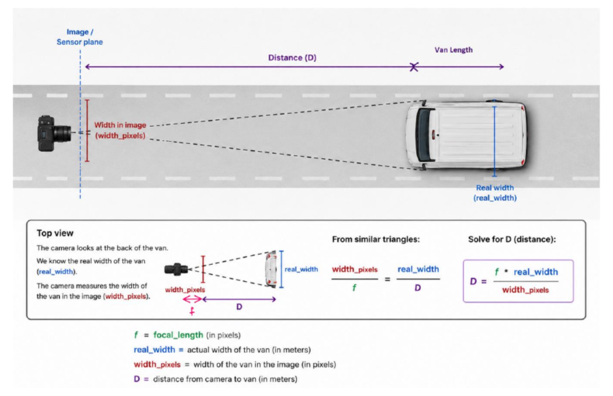

YOLO · COMPUTER VISION · OPENCV
Vehicle Detection & Monocular Distance Estimation Using YOLO
Individual autonomous-systems project focused on vehicle detection and monocular distance estimation from a camera image.

Project Overview
This project focused on detecting vehicles in a road scene and estimating their distance from a single camera image. A YOLO-based object-detection workflow was used to identify vehicles in the image. The distance estimation was based on the apparent vehicle width measured in pixels and a known real-world vehicle width. Camera calibration data was used as part of the focal-length calculation required for the geometric model. The relationship between focal length, image width and real vehicle width was derived using similar triangles. The final result demonstrates a practical monocular-vision approach for vehicle perception and distance estimation.
Project Evidence
